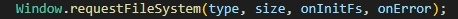
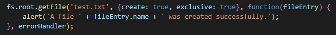
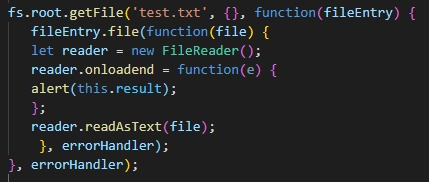
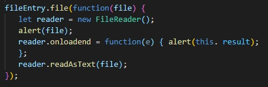
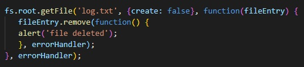
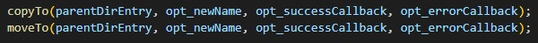

The FileSystem API and File API, a web application can create, read, view and write files and/or directories in a virtual, sandboxed file system.
The API description is divided into the following sections:
Objects for work:
We can get this object using the following construction:
Where:
The file will be created as follows:
We extract the test.txt file and create a FileWriter object for it. Then we attach the contents to it, creating a new BlobBuilder object and applying the write() method to FileWriter.
Reading is easier. We use the already familiar FileReader:
File deletion:
FileEntry and DirectoryEntry share the same methods of copying the API, moving and renaming inputs. Two methods can be used for these operations: copyTo() and moveTo(). They both take the same parameters:
The first parameter is the parent folder for moving/copying input to it. The second is an arbitrary new name given to the moved/copied input, which is actually required when you copy the input in the same folder, otherwise you will have an error. The third and fourth parameters were explained earlier.
For a more detailed study, you can use the links: